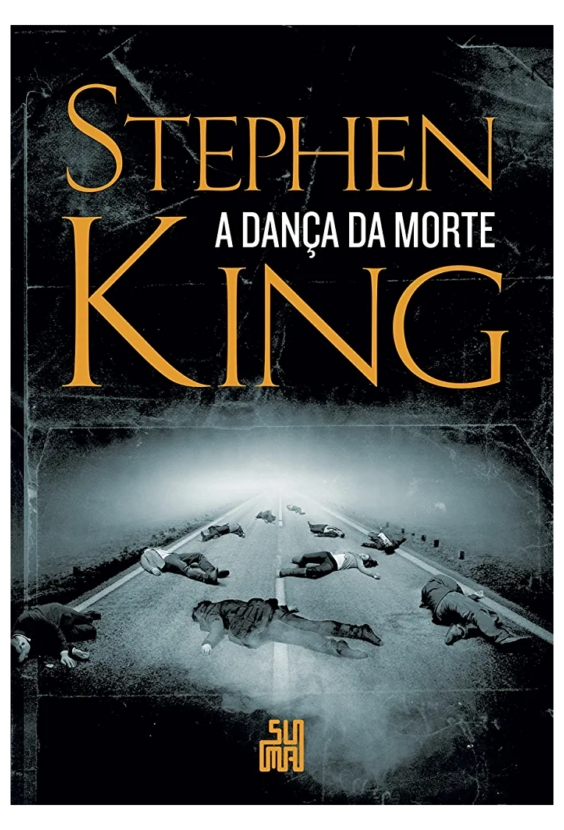

A dança da morte - Stephen King
Sinopse
Após um erro de computação no Departamento de Defesa, um vírus é liberado, dando origem à doença que ficará conhecida como Capitão Viajante, ou “supergripe”. Não demora muito para que um milhão de contatos casuais formem uma cadeia de morte, e é assim que o mundo como o conhecemos acaba. O que surge no lugar é um mundo árido, sem instituições e esvaziado de 99% da população. Um mundo onde sobreviventes em pânico escolhem seus lados ― ou são escolhidos. Os bons se apoiam nos ombros frágeis de Mãe Abigail, com seus cento e oito anos de idade, enquanto todo o mal é incorporado por um indivíduo de poderes indizíveis: Randall Flagg, o homem escuro.
Com sua complexidade moral, precisão de ritmo e brilhante construção de personagens, A dança da morte tem um lugar garantido entre os clássicos da literatura contemporânea.